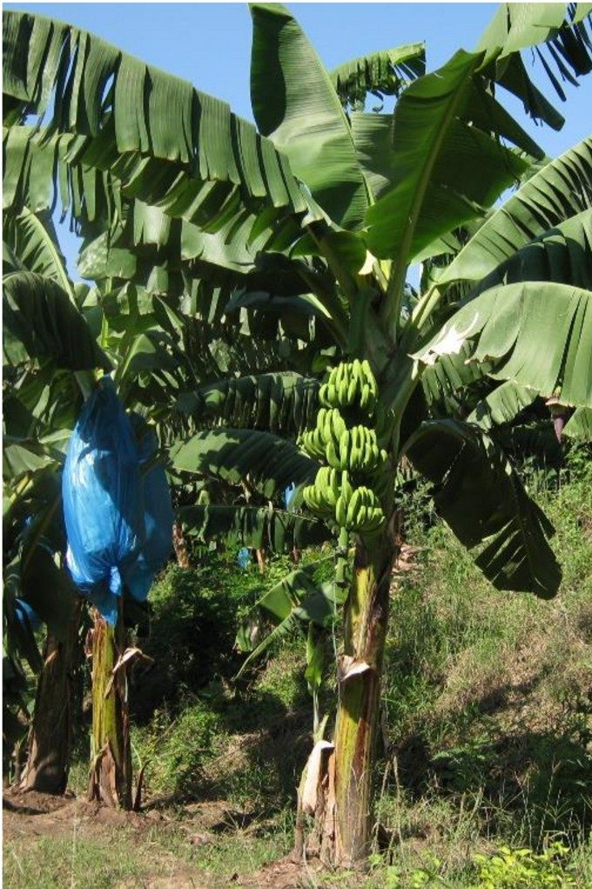

Home / Sustainability
Value from banana plant waste.
Why turning agricultural residue into natural fibre supports renewable materials and circular economy thinking.

Agricultural residue utilization
Turning a by-product into a material.
When the fruit has been harvested, the banana plant's pseudostem is typically cut down and left as residue.
Our work is to find value in that residue by extracting natural fibre from it. This is the heart of our agricultural waste utilization approach.
Our sustainability purpose
Four ideas behind Ecostalk.
- Residue utilizationUsing banana plant waste as a raw material rather than leaving it unused.
- Renewable materialsNatural fibre from a plant source offers an alternative to conventional materials.
- Circular economyCreating value from agricultural waste keeps resources in use for longer.
- Community valueCreating additional value from banana crop residues and supporting agricultural communities is part of our mission.
Reading this page
Industry context and our commitments.
General industry context
Natural fibres from agricultural residues are widely discussed as renewable materials, and using crop residue can reduce the amount of waste left after harvest. These are general benefits of the material class, not measured results for Ecostalk.
Our commitments
Our mission commits us to sustainability, innovation, farmer empowerment, quality excellence and global impact. We do not publish environmental figures or certifications on this website.
Potential applications
Where natural fibres are used.
Examples of how natural fibres are used in industry. This is general information, not a list of our products.
- Textiles & yarnsNatural fibres can be spun and woven into fabrics.
- Handicrafts & home furnishingNatural fibres are used for craft and decorative products.
- Paper & packagingPlant fibres can be used in paper-based materials.
- Composites & cordageNatural fibres are explored as reinforcement and for ropes and cords.
Business enquiries